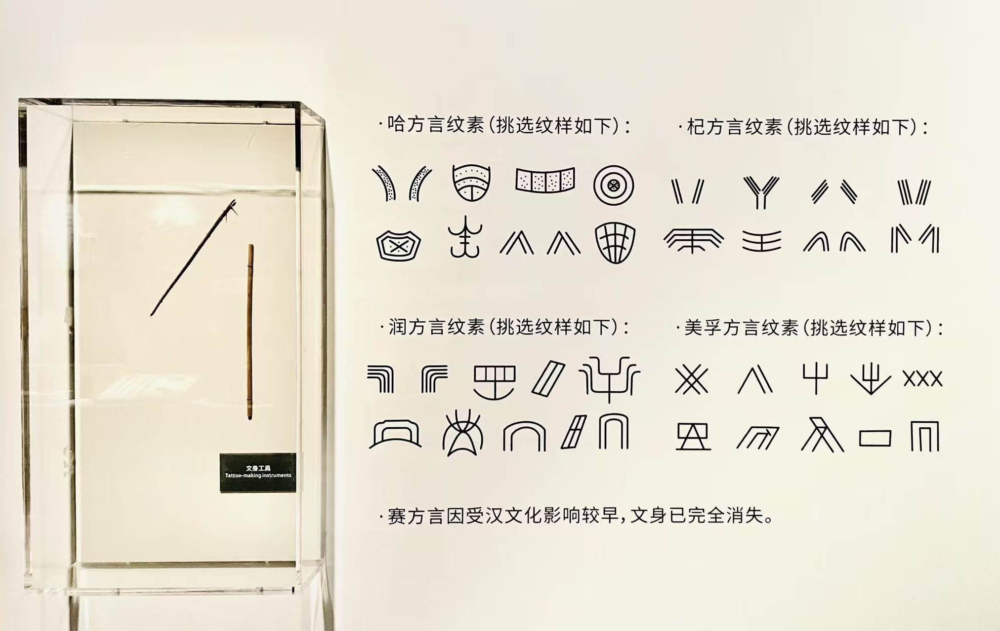

探索黎族织锦的奥秘，通过填充图案来学习黎族传统纹样文化。每个纹样都蕴含着丰富的文化内涵，帮助你更深入地了解黎族的历史与艺术。
织梦千年的文化之谜
在海南岛的深山中，年轻的黎族女孩阿织发现了一本尘封已久的《黎锦图谱》。
这本古老的图谱记载着失传已久的织锦技艺和神秘的纹样密码...
帮助阿织解开这些纹样之谜，重现黎族千年的织锦文化！
每行每列的数字代表该行/列中连续同色格子的数量。
例如："2 1"表示有2个连续的格子，然后至少一个空格，再有1个格子。
选择颜色后，点击格子进行填充。
再次点击可以清除格子。
当所有格子都正确填充后，你将解锁新的黎族纹样！
每个纹样都有其独特的文化含义。